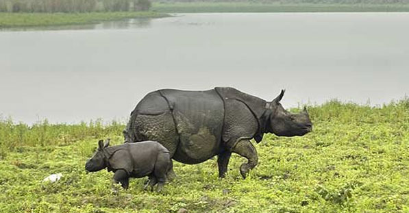

Kaziranga Wildlife Photography Tour
PackagesDescription
Kaziranga National Park Assam has always been dream destination for any vivid wildlife enthusiasts and photographer. Its dense grasslands, open woodlands, lush green flood plains makes it most amazing place to be captured in camera. Apart from one horned rhinoceros, the park is also an abode of large breeding population of elephants, wild water buffalo, and swamp deer and hotspot for 470 species of avifauna. Kaziranga wildlife photography tour has been designed to keeping in mind interest of photographers.
Travel Days
-
Days 01
Arrive at Kaziranga
Our tour and services starts once you reach Kaziranga. Upon arrival first complete the check in formalities at the hotel then will have a welcome session to introduce ourselves. Out tour guide will discuss about the place and photography opportunities that we will execute during the tour. Take an early dinner and retire for the day.

-
Days 02
Enjoy Morning and Evening Safari in Kaziranga Tourism Zones
Get up early in the morning. Please remember that you are in the far east so sunrise is much earlier than you are expecting. Your hotel is also located at a great place where some early bird photography can be done. After that we will head out for the first safari tour. As we pass through the jungles of Kaziranga photograph the wildlife that you encounter. We return to the hotel for breakfast.
Post lunch, we head out for another safari tour into Kaziranga. During the course of the tour, we’ll try to cover various zones of the park to explore different habitats and photography opportunities. After the safari, you may have review session before dinner. -
Days 03
Morning hike at Hoollongapar Gibbon Sanctuary
We start our day today before sunrise today and move on a 2-hour drive to Hoollongapar Gibbon Sanctuary. It is an abode of 7 species of primates (one of them nocturnal), this is a great place to view the star – Western Hoolock Gibbon (India’s only ape. Apart from US, of course). We’ll hike in the park to look for these primates. Come back to hotel and take your meals. Stay overnight.
-
Days 04
Get Ready for Another Safari Day in Kaziranga
Day four of your tour is going to be more important. Today we will explore untouched and hidden part of the Kaziranga National Park. It is quite similar to the second day of your tour. Take back to back two morning and evening safari in the park. Jeep and elephant safari would give you an opportunity to photograph the wildlife from too close.
-
Days 05
Departure – Onward Destination
We head out for one last safari for the tour. After breakfast, complete check out formalities at the hotel we begin our journey back home via Guwahati/Jorhat.
Item Reviews - 3


Ram singh2 Nov May 2019
" I have a great passion of photography. I have visited almost every national parks of India but Kaziranga was missing. I just believe that Kaziranga would be best spot for wildlife photographer. It has many wonderful views to capture and demonstrated. It was just awesome!"
Anamika Kumari10 Nov 2019
" I believe that knowing photography skill is not enough for any photographer to give his best until he is not finding best spot to be photographed. Wildlife and floral species of Kaziranga is so unique that must be captured when you are living your wildlife photography passion once in life. "